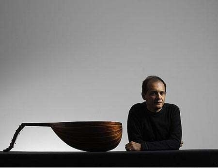

Kararında: Anouar Brahem & Barbaros Erköse
Sevgili prenses, geçtiğimiz günlerde Anouar Brahem (Enver İbrahim), daha önce 2 albümünde çalmış Barbaros Erköse’yle birlikte konser vermek için İstanbul’daydı. Hadi Brahem’i bilen biliyor da Erköse ne yapar, ne eder, fırsat bu fırsat diye söyleşiye koyulduk ikisiyle. Yalnız değilim şükür, Cümbüş Cemaat’ten tanıyabileceğiniz Onur’la birlikteyiz. Brahem Fransızca konuşmayı tercih ettiği için Merve Kurt da çeviride bize yardımcı oluyor. Tanışmalarıyla başlayalım, Erköse’ye soruyoruz…
86 senesinde Enver İbrahim Taksim’de bir otelde kalıyor, radyoya (TRT) gelmiş. Kudsi Ergüner’le bir temas ediyor. Tunus’ta 10 konser var diyor. Oradan üç tane müzisyen arkadaş; klarnet, keman, kanun istiyorlar. Kemal Demir, Ahmet Cennetoğlu kanun, diğer klarnet Nuri Gün diye bir arkadaş; onlar da radyo sanatkârları… Notalarını getirmiş, bir parçası var 20 gün çalamıyorlar. Bir satır çalıyorlar, ikincide takılıyorlar. Benim de Paris’te konserim vardı, geldim merdivenleri çıkıyorum, bir telefon çalıyor… Ben de çabuk çabuk kapıyı açtım; Kudsi Ergüner: “Abi sen nerdesin?” “Paris’te konserim vardı, bitti…” “Ya, bu arkadaşlar bunu çalamadılar, Enver İbrahim diye birisi var, Tunuslu… 10 konseri var Tunus’ta, sen gel,” dedi. Ben de Ali (Erköse) abimi aldım, yeğenim vardı Serder Şal… Geleyim dedim, “radyoda beşte…” “Olsun,” dedim. O şekilde tanıştık Enver’le. Ve biz o parçayı çaldık, beğendi. Tunus’ta 10 konser eşlik ettik, tanışmamız böyle oldu. Bizi çok takdir etti. Bir hafta sonra bana telefon açtı. “Beraber,” dedi, “Trio; Lassad (Hosni), sen, ben dünya turuna gideceğiz,” dedi. Ben kabul ettim. Bu sefer Amerika, bütün her tarafı, dünyayı gezdik beraber.
Çapraz sorgudayız, aynı soru Brahem’e de geliyor…
Umarım aynı versiyon olur. (gülüyor) Paris’te olduğum dönemde Kudsi Ergüner, Erköse kardeşlerin bir kaydını dinletti. O kayıttan çok etkilendim. Bir süre sonra Tunus’ta önemli bir festival için benden bir iş yapmamı rica ettiler. Hem caz hem de oryantal müzisyenlerle çalıştığım ilk konserim oldu bu benim. Türk müzisyenleri de bu işin içine katmayı istedim. İlk aklıma gelen Erköse kardeşler oldu. Çocukluğumdan beri Türk Müziği’ni seviyordum, özelikle de klarnetin sesine hayrandım. Kudsi Ergüner’den bizi bir araya getirmesi için ricada bulundum, fakat maalesef Erköse kardeşler o sıra müsait değildi. Ben de başka müzisyenlerle çalışmaya karar verdim. Provalara başladık ama hissettiğim şey bu işin yürümeyeceğiydi. Şansa Erköse kardeşler son gün İstanbul yakınlarındaydı, geldiler, prova yaptık ve hemen anladım ki bu iş olabilir. Ardından Tunus’a gidip diğer müzisyenlerle provalara başladık.
Anouar Brahem aralarında John Surman, Dave Holland gibi pek çok önemli müzisyenle kayıt yapmış biri. Erköse’yi özel kılan nedir diye merak edesimiz geliyor. Malum, bir şeyler sormak lazım…
Conte de L’Incroyable Amour ve Astrakan Cafe’de birlikte çalışmıştık. Barbaros özel birisi, çalış biçimi de öyle. Bildiğiniz gibi çok yetenekli bir müzisyen. Ben Türkçe bilmiyorum, o da Arapça ya da İngilizce bilmiyor ama kısa sürede, birlikte çalarak muazzam bir iletişim yakaladık. Harika bir kulağa ve tona sahip. Ben bir nevi modern Arap müziği yazıyorum, o da geleneksel müzik icra eden biri olmasına rağmen hassasiyeti sayesinde müziğin gereklerini anlayabiliyor.
Erköse lafa giriyor…
Benim için Enver İbrahim çok muazzam ud çalan bir kişi. Bütün eserlere göre yorum yapan kişi. Onun çıkarmış olduğu tını hiçbir ud çalan kişide yok. Beyrut’ta müzisyenlerle -şu anda isimlerini hatırlamıyorum- konserlerim oldu fakat ben Enver’deki duyguyu onlarda göremedim. Ona iletiniz.
Merve aracılığıyla Erköse’nin düşüncelerini Brahem’e aktarıyoruz. Merci’ler, rica ederim’ler dolanırken ortalıkta, ben Doğu – Batı, çok sesli – tek sesli gibi kelimeleri bir soru cümlesinde kullanmaya çalışsam da nafile. Afyon patlamadığından saçmalıyorum.
O sırada Onur devreye giriyor. “Müziğinizi kategorize etmek gibi bir derdimiz yok, müzisyenin kendi müziği üzerine konuşması da zordur ama sizin müziğinizde bir saflıktan bahsedebiliriz daha önce hiç duymadığım,” demesiyle Brahem dile geliyor…
Beste yapmaya başladığımda enstrümanları düşünmezdim. Sadece bazı fikirlerim ve taslaklarım vardı. Ufak ufak parçaların yapısını inşa etmeye başladım. Parçaların kimliğine göre; nasıl tınladığına ya da günlük değişimlerine göre enstrümanlar devreye girmeye başladı. Hiçbir zaman bir enstrümanı düşünüp ona göre bir şey yazmadım. Benim için bir esere enstrüman seçmek uzun zaman alıyor. Tıpkı senaryodaki bir rol için doğru aktörü seçmek gibi. Mesela bir basçıyla ya da Türk bir klarnetçiyle çalışacağım demek benim için anlamsız. Önemli olan müziğin ne istediği. Benim için zorluklardan biri de hem moderniteye hem de köklerime doğru geleneksel bir bakışa ihtiyacımın olması. Geleneksel müziği işin içine katışınıza göre sonucun bayağı ya da yakışıksız olma ihtimali var. Şekeri fazla kaçırmak gibi… Bazen yapmak istediğiniz şeyin çok basit ya da sizin söylediğiniz gibi saf olmasını isteyebilirsiniz. “İşte bu,” dersiniz, daha fazlasına ihtiyacınız yoktur. Mesela Le Pas De Chat Noir sadece bazı taslaklarla başladı. Dave Holland ve John Surman’la bir albüm kaydetmiştim. Muhteşem bir deneyimdi. Ardından uzun süre ud çalmadım. Piyanoda beste yapmaya başladım. Le Pas De Chat Noir da böyle başladı. Piyanoda bestelemek gibi bir niyetim yoktu, piyanist de değilim. Farklı bir ses, ilham peşindeydim. Baktım kötü tınlamıyor, hatta ilginç de gelmeye başladı. Ardından birkaç taslak üzerine çalışmaya başladım ama 2 yıl besteler sadece piyanoda şekillendi. Müziğin içinde ud ya da akordeon duymuyordum. Belki çello olabilir diye düşünüyordum. Bir karar verememiştim ve “Unut gitsin,” dedim. Belki 5 sene sonra bir çözüm bulurum diye düşünüyordum. Bir gün, sonradan albümde yer alacak olan parçalardan birini çalarken akordeon iyi olabilir diye düşündüm. Baktım diğerleri için de oluyor. Böylelikle bu bir projeye dönüştü. Başlarda bu taslaklar için piyano ve ud birlikte olmaz diye düşünmüştüm. Benim müziğe yaklaşımım bu şekilde; akordeon ve piyanoyla udu bir araya getirip bir nevi sentez peşine düşmek değil, kafamdaki fikirler için çözümler bulup bir yapı inşa etmek. Daha sonra kayda girdik ve bir grup oluştu. Bunun çok içedönük bir müzik olduğunu düşünüyordum ve bu projeyle sahneye çıkmayı reddediyordum. Bunun sadece bir kayıt projesi olduğunu, aynı mahremiyeti sahnede sağlayamayacağımızı düşünüyordum. Kayıtları kulaklık kullanmadan yapmıştık, çok yakın bir ilişkimiz vardı. Sonra bir konser deneyimimiz oldu ve sonuç da başarılıydı, ardından 200 civarında konser verdik. Le Pas De Chat Noir albümlerim arasında en çok satan albüm oldu, fakat bunları hiç beklemiyordum.
Bu başarı aynı üçlüyle Le Voyage De Sahar albümünün de kapısını açtı diye düşünürken yine öngörülmemiş bir durum olduğunu öğreniyoruz…
Bu konserler sırasında yeni bir proje için de çalışıyordum bir yandan. Hatta tuhaftır François Couturier (piyano) ve Jean Louis Matinier (akordeon) yeni proje var mı diye soruyorlardı. Ben de “Var ama maalesef akordeon ve piyano için değil,” diyordum. (gülüyor) O sıra yazmaya çalıştığım müziklerin içinde yine akordeon ve piyano duymuyordum ama sonunda “Bir deneyelim,” dedim ve baktık oldu. (gülüyor)
Erköse, hazır tercüman da varken Brahem’e bir soru soruyor…
Peki bu Astrakan Cafe’yle, o akordeon – piyanoyla çalmış olduğu albüm arasında satış olarak, beğenilme olarak hangisi farklı? Yani hangisi daha ön planda oldu? Ben onu merak ediyorum da kendisine soralım. (gülüşmeler)
Tabii ki Astrakan Cafe… (gülüşmeler) Benim için çok öne çıkan bir albüm yok. Gerçekten müziğim üzerine çok fikrim yok.
Az önce toparlayamamış olduğum mevzuya geri dönüyorum. Özellikle Le Pas De Chat Noir ve Le Voyage De Sahar albümlerinde tek ses ve çok sesin muazzam bir buluşması olduğunu söylüyorum. Özellikle Cumhuriyet’e geçmemizle tek sesli müzik kültüründen uzaklaşıp, ondaki makamsal derinliği hiçe sayıp yerine çok sesli Batı müziğini koymaya çalıştığımızı söyleyip, Brahem’in müziğinde de bir nevi doğal “sentez”in gerçekleştiğini anlatabilmem için 3 lisanı harcamamız gerekiyor…
Soruyu tam olarak anlamasam da cevap vermeye çalışayım. (gülüyoruz) Konservatuvarda müzik eğitimine başladığımda, Tunus’ta o zamanlar Batı müziği ve geleneksel müzik bölümleri vardı. Ben ud çalmak istediğim için geleneksel bölümü seçtim. O zamanlar bazı müzisyenler Arap müziğini modernize etmeye çalışıyorlardı. Bu müziği büyük orkestralar için çok sesli müziğe uyarlıyorlardı. Benzer bir deneyimi siz de yaşadınız galiba. Bunun oldukça yapay olduğunu düşünüyordum. Modernite bu değildi benim için. Geleneksel bir motifi alıp cover’ladığınızda onu yaşatmış olmuyorsunuz. Geleneksel müziğin evrimi yerel kültürün içinden olmalıydı. Arap müziği kendi modernitesini bulmalı. Ben çok sesli müzik kültüründen değil modal müzik geleneğinden geliyorum. Fakat müziğimde çok sesli unsurlar bulabilirsiniz. Batı müziğinin çok sesli sistemini geleneksel müziğe adapte etmek istemedim. Kendi kültürümün unsurlarını bulmaya çalıştım, gerektiğinde tabii. Mesela, Le Pas De Chat Noir ilginç bir deneyimdi. Modal müzikten geldiğim için temaları yazmaya başladım. Sonrasında içine çok sesli öğeleri de katarak bir entegrasyon için çözümler aramaya başladım. Ama bu aranjman yapmak değildi. Astrakan Cafe gibi modal müzik yaptığımız albümler dışında müzik el verdiği ölçüde polifoni için yer bulmaya çalıştım. Fakat bu her zaman Müzik’le ilişkilidir.
|
Onur, Türkiye’de geleneksel müziğin engellendiği bir dönemin olduğunu, bu müziğin görmezden gelinip, Batı müziğinin öne çıkarıldığını ve geleneksel müzik tekrardan yolunu bulduğunda aldığı hâlin eklektik bir kombinasyondan ibaret olduğunu söylüyor. Fakat, şimdilerde Türk Müziği’nin Brahem’in bahsetmiş olduğu türden bir gelişim içinde olduğunu da ilave ediyor…
Türk müziğinin çok özel bir zenginliği olduğunu düşünüyorum. Arap müziğini de oldukça etkisi altında bırakmıştır hatta. Konservatuvarda peşrev, longa gibi pek çok form çalardık. Anadolu’ya ya da Klasik Türk Müziği’ne bakacak olursanız pek çok stilin ve çok zengin bir repertuvarın olduğunu görürsünüz. Sizden olanı unutup ötekini kendinize uyarlayarak modern olamazsınız. Kimlikler bu şekilde silinmemelidir. Yıllardan beri Türk müzisyenlerin de bunu söylemesinden çok memnunum. Çok iyi hatırlıyorum; bahsetmiş olduğum, ‘85’te Tunus’ta verdiğimiz konserde Türk konsolosluğundan bir kadın gelip “Neden bu müzisyenleri getirdiniz, Türk müzisyenler bunlar değil!” diye bağırmaya başladı bana. Klasik müzik çalan müzisyenleri getirmemi bekliyormuş. Fakat bu bakış artık değişti. Türkiye’de önemli modern müzik yaratabilecek bir potansiyel olduğunu düşünüyorum.
Bu noktada Onur, Erköse’ye müzik hayatında benzer bir dışlanmaya maruz kalıp kalmadığını soruyor…
|
Yok, hiç olmadı. Şimdi, o kadar çok çeşit müzik var ki Türkiye’de, dünyada… Mesela Ramazan günleri ney çalıyor, ona sadelik lazım. Hani her zaman bir Batı tarzında gelişmeler yapılmış. Bazı eserler hiç ilave kabul etmez yani, bunu bilmemiz lazım. Müzik değişti diye aranjmanlar yapıp eserleri dinlemek yersiz oluyor. Öyle eserler var ki, mesela Dede Efendi var. Onların eserlerine bir ilave bile kabul etmez. Eser bozulmuş olur. Bunu biz çok şükür anlıyoruz, hangi esere ne yakışır biliyoruz ama çoğu bunu bilemiyor tabii. Yani lüzumsuz konuşma gibi oluyor. Her şeyde nağme yapıyor, yersiz yersiz süslemeler yapıyor… Nedir, ben iyi çalıyorum diyor. İşte usta bu… (Brahem’i göstererek) (gülüşmeler)
Biz de Usta’nın son projesi Astounding Eyes of Rita’yla söyleşiyi bitirelim diye düşünüyoruz. Onur dinlediği en yaşayan müzik olduğunu söylüyor bu albümün. Bunun için de “organik” kelimesini kullanıyor. Brahem’in kafası da biraz karışıyor hâliyle ama toparlaması çok zaman almıyor…
Başladığında hiç de organik değildi, eğer organikse tabii. (gülüyor) Her zaman olduğu gibi burada da başta pek çok farklı fikir vardı ve gerçek bir ahenk söz konusu değildi. Ama ufak ufak bir ahenk yakaladım. Bu proje için yazdığım ilk taslaklar bana Le Voyage De Sahar’a göre daha oryantal tınladı. Başlarda aklımda keman vardı. İyi bir kemancı bulmaya çalışıyordum, melodileri çalması için bas klarnet aklımdan hiç geçmemişti. Klarnetçiyle bir deneme provası yaptım ve baktım oldu. Aslında oryantal çalabilen bir müzisyen vardı aklımda ama kaydın dışında konserde de uyum sağlayabileceğiniz birini bulmak zor. Sonuçta uyum sağlandı. Her zaman risk vardır; farklı bileşenler, farklı evrenler ve kompozisyonlarınız… Bir kombinasyonu seçmek zorundasınız. Başta seçebileceğiniz pek çok yol var. Benim de her zaman farklı seçeneklerden bir sonuca gitmem gerekiyor bahsettiğiniz organik durumu ortaya çıkarmam için. Bu projede de provalar sonucunda herkes yerini bulmak zorundaydı. Sonrasında birlikte çalınca da ne olup bittiğine dair gerçek resmi görüyorsunuz. Bir yandan da bu projeyi geliştirmeye devam ediyoruz. Uzun süredir birlikte çalıyoruz, bazı şeyler de kayıttakinden daha farklı hâle geldi.
Röportaj: Volkan Balkan – Onur Yusufoğlu
ps: Bu ropörtaj Karga Mecmua‘nın Ocak sayısında yayınlanmıştır.


{kind=link}
{kind=link}
{kind=link}